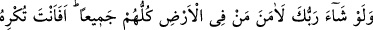
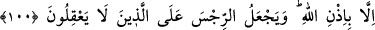
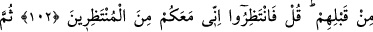
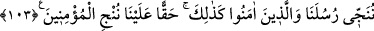

ALLAH’IN İZNİ OLMADAN
KİMSE İNANAMAZ
99. Rabb’in isteseydi, yeryüzündekilerin hepsi mutlaka inanırdı. O halde sen mi
insanları inanmaları için zorlayacaksın.
100. Allah’ın izni olmadan hiç kimse inanamaz. Allah pisliği, akıllarını
kullanmayanların üzerine kor.
101. “Göklerde ve yerde olanlara bakın.” de. Fakat inanmayan bir topluma
âyetler ve uyarılar fayda sağlamaz.
102. Onlar sadece kendilerinden önce gelip geçenlerin başlarına gelen günler
gibisini bekliyorlar öyle mi? De ki: “O halde bekleyin, ben de sizinle beraber
bekleyenlerdenim.”
103. Sonunda peygamberlerimizi ve îman edenleri kurtarırız. İşte böyle,
üzerimize bir borç olarak mü’minleri kurtarırız.
“Rabb’in” yeryüzündeki insanlarla cinlerin îmân etmesini “isteseydi” hiçbiri
dışarıda kalmamak üzere “yeryüzündekilerin hepsi mutlaka” ayrılığa düşmeksizin
ittifakla “inanırdı.” Fakat yaratma ve teşrî; yani şer’î hükümler koyma esaslarının bina
edildiği hikmete aykırı olduğu için Allah bunu istemedi.
Allah, iki kabzanın; yani cemâl ve celâlinin hükmünü tamamlamak ve iki dünya; yani
cennet-cehennem ahalisini oluşturmak maksadıyla inkarı tercih etmeyeceğini bildiği
kişilerin inanmasını istedi. İnanmayacağını bildiği kişilerin inanmasını ise istemedi,
mükellefiyetin geçerli olması için herkesi istîdâdlı olarak yarattı. Hz. Peygamber (s.a.)
de kavminin inanması konusunda hırslıydı ve buna çok önem veriyordu. Çünkü kâmil bir
insanın yaratılışı, herkesin inanıp bağışlanmasından başka bir şey istemeyecek şekilde
külli bir rahmet taşır.